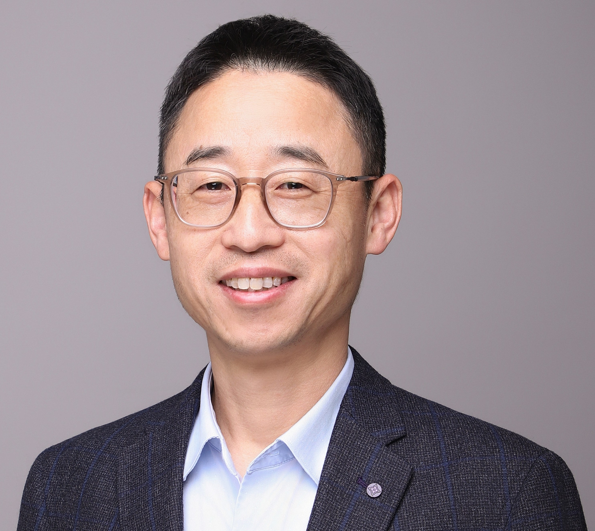
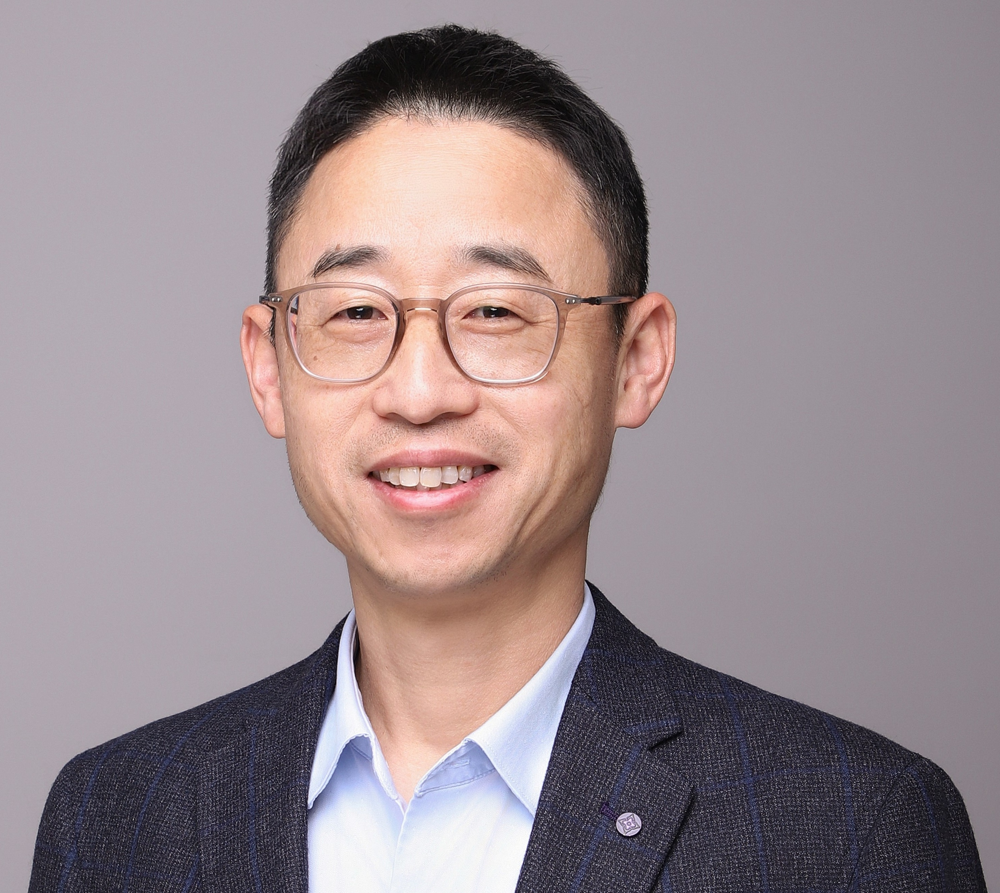

Our Mission
We are committed to delivering breakthrough therapies for autoimmune disease by combining scientific rigor and deep compassion – bringing hope and healing to patients who need it most.
We are committed to delivering breakthrough therapies for autoimmune disease by combining scientific rigor and deep compassion – bringing hope and healing to patients who need it most.
 
